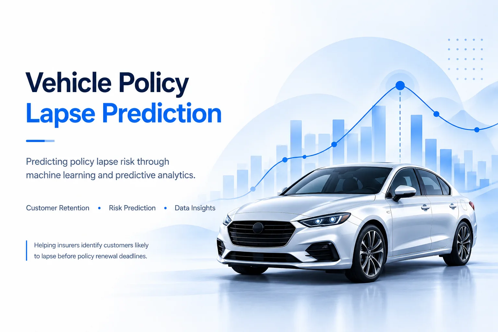

An insurance risk scoring service combining supervised learning, reproducible preprocessing, API based inference, and containerised cloud deployment.

Policy lapse prediction is a binary classification problem: identify policies at risk of lapsing so an insurer can prioritise retention activity. The challenge is to identify as many lapse cases as possible without overwhelming retention teams with false alarms.
The workflow uses policy level data to prepare model features, train a classification model, and generate lapse risk probabilities. The selected model and preprocessing steps are packaged for inference through a FastAPI service.
Logistic Regression was evaluated on a dataset of approximately 23,000 policies, with a lapse rate of around 13%. Evaluation prioritised recall to reduce missed lapse cases.
The results expose an important operational trade off. High recall captures most lapse cases, but low precision means many flagged policies would not lapse. The model therefore requires further discrimination improvements before it could be relied on for cost efficient targeting.
The dataset contained 19 input features. Preparation included categorical encoding, handling skewed distributions, and reviewing highly correlated premium variables.
The inference layer exposes predictions through FastAPI. Docker packages the application and dependencies, while Azure App Service provides the hosting environment. The preprocessing and model artifacts are reused during inference to keep predictions consistent with training.